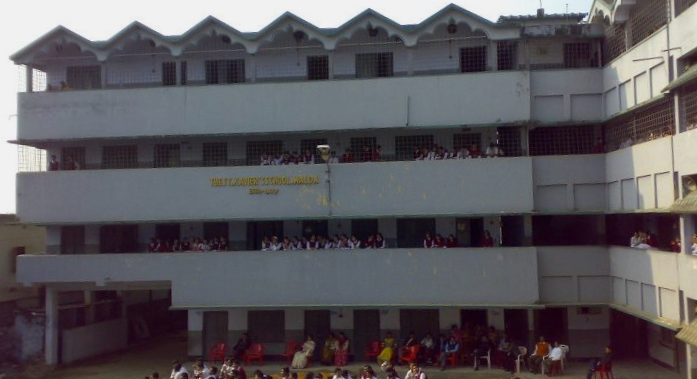

School Life
I completed my schooling in Malda, from The St. Xavier's School, Malda. The St. Xavier's School, Malda is the oldest English Medium institution in Malda affiliated to the Council for the Indian School Certificate Examination (CISCE). It is located in Krishna Kali Tala, Mokdumpur, Malda. From nursery to class 12, it has been quite a journey for me in this school. The teachers cared for us the same way our parents would creating the foundation of the human being I am today. Friends gave me memories worth cherishing for life. Academically I worked very hard to reach my goals.
My performances in class 10 and 12 are given below :

The St. Xavier's School, Malda
Class 10 or ICSE Board Results
| SUBJECT |
PERCENTAGE |
| ENGLISH |
87 |
| BENGALI |
95 |
| HISTORY-CIVICS & GEOGRAPHY |
| HISTORY-CIVICS |
GEOGRAPHY |
| A |
B |
| 91 |
|
| MATHEMATICS |
97 |
| SCIENCE |
| PHYSICS |
CHEMISTRY |
BIOLOGY |
| A |
A |
A |
| 94 |
|
| COMPUTER APPLICATIONS |
99 |
Class 12 or ISC Board Results
| SUBJECT |
PERCENTAGE |
| ENGLISH |
92 |
| PHYSICS |
97 |
| COMPUTER APPLICATIONS |
98 |
| MATHEMATICS |
83 |
| CHEMISTRY |
74 |
College Life
After completing my schooling, I am currently pursuing Bachelors in Science in Computer Science in Asutosh College, Kolkata, West Bengal. Asutosh College is affiliated under University of Calcutta. The College was built up in the year 1916 under the leadership of Sir Asutosh Mukherjee, the famous mathematician, educationist and the then Vice-Chancellor of the University of Calcutta. I still have a long path to go and a whole lot to learn. So keep in touch!